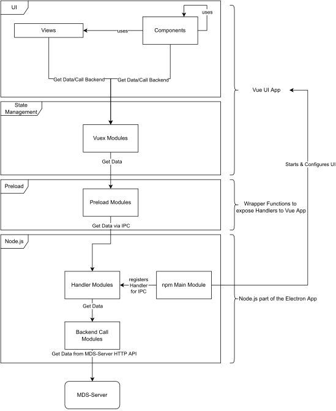

Development#
This chapter concerns documentation related to the development of the MDS-Desktop app not the use of it by endusers.
Development Environment#
This chapter provides instructions on how to setup the recommended development environment for the MDS-Desktop project. The MDS-Desktop app is built, on top of vite-electron-builder as an Electron application which uses Vue.js to render the ui and Vite to build the vue.js application. As an Electron app this application is built on top of Node.js and uses the npm package manager for dependency management and the build process.
Setup Development Environment#
First you need to setup Node.js and npm if you haven’t already. To install both download and execute the Node.js Installer or use a package manager for the installation, if available.
Next if you just want to run the MDS-Desktop app you can clone the regular repository using:
git clone https://github.com/mobile-directing-system/mds-desktop.git
If you want to contribute however, you need to create a fork of the regular repository and clone the fork instead.
Finish setting up the app by changing into the root directory of the repository and run npm i.
To run the app in dev mode with HMR for most parts of the app run npm run watch.
Lasty to run the app in productiion mode with the statically compiled vue ui run npm run prod.
You can use any Editor you like to work with the app but we strongly recommend VSCode. This editor enable comfortable development by providing a number of extensions that help with the developement. Recommended extensions for working on the app are npm Intellisense, Vue Language Features, ESLint and Tailwind CSS IntelliSense.
Technolgies & Architecture#
This chapter covers used technologies, theirs docs, if necessary how they are used and the architecture of the MDS-Desktop app.
Technologies#
For this Electron app we use Vue.js as the web framework with tailwindcss and Flowbite as the UI framework and the logic is writtin in Typescript. For routing we use vue-router. For state management of the UI we use vuex with the vuex-smart-module to have TypeScript support. We use Lodash as a utitlity library in the frontend. The vue app the UI uses Vite for building and bundling. The communication with the backend is implemented using Axios.
Architecture#
{kind=link}
As an Electron app the MDS-Desktop app is split into three parts. The first is the Website which defines the UI, for which we use a web app developed in vue. The second is the Preload Module which defines what Node.js functionality is usable from the web app. Here we use is mainly to expose wrapper functions around the IPC calls to the Node.js part of the app. Lastly there is the Node.js part. This part starts & configures the browser windows to display the web app and implements other functionality not available to JS in the browser such as access to the files on the computer.
The Vue UI app is split between the router, views, components and the vuex state. The app is structured by using the router to route between different views. These views themselves are made up of components, HTML and Typescript. Those components them are made up similary to the view, but in contrast to the views they are supposed to be usable at multiple points in the application. We decide on which functionality to put into a component based on if it is going to be reused or not. The data which is displayed by the UI is taken from vuex which we use to manage the state of our app.
Warning
Both views and components are written in the SFC format using Vue3 with the Composition API. We also use Typescript and the <script setup> tag for our code. When ever possible try to use those technolgies and make sure that when browsing the Vue.js Documentation you have the toggle at the top of the sidebar set to Composition API.
To get started with Vue.js take a look at the Vue.js Documentation. For an introduction to the vue-router visit the vue-router Guide. To get a general understanding of vuex you can orient yourself at the vuex Guide. But we use the vuex-smart-module to gain TypeScript support for vuex and used the README in the vuex-smart-module Github orient ourself when writing our vuex module.
The Preload Module is mostly autmated and only conists of wrapper functions to expose the IPC calls to the vue app. But here it is Important to note that the auto-export plugin currently is bugged and needs all of the functions you want to export to be on a seperate line and in a seperate export statement. If this is not done the vue app will not be able to find the preload module.
We use the Node.js part mostly to implement the skaffolding of the app (e.g. start browser window with the web app and hide window bar, implement exit window function, etc.) and the IPC, Handler and client-side implementation of the MDS-Server HTTP API. To Familiarize youself with Electron you can use the Electron Introduction.
Directory Structure of the Project#
Minimal Implementation for new Service#
To implement a minimal service for a new entity (e.g. User, Group, etc.) do the following:
Start with implementing the calls to the backend API using Axios in main/src/backend. Once implemented export them in the main/src/backend/index.ts file.
Use them to write a handler-wrapper in main/src/ipcHandlers. Export these handlers in the main/src/ipcHandlers/index.ts.
Register these handlers in ipcMain in main/src/index.ts and give them speaking names.
Write a wrapper functions for calling those ipcHandlers in preload/src and export them in preload/src/index.ts.
Warning
Make sure that the names used for calling the ipcHandlers are exactly the same as the ones given to them when registering them. Important There is a bug with the auto-export plugin that requires you to export each wrapper function sperately on a new line. If this is not done the vue code can’t find the preload module.
Lastly implement a seperate vuex module to manage the state of the retrieved entities. Use the preload wrapper functions to fetch data from the backend.
Warning
When writing a new vuex module and utilizing the IPC wrapper exposed by the preload module it is necessary to undom the objects of the vuex state before they are passed to the wrapper function. If not electron will throw an error complaining that it cannot serialize the object. With undom we mean that you must create a deep copy of the object, so that only basic data types such as number, booleans and strings are copied. Also only fields specified in the type of the object must be copied, but not additional fields created at runtime. This means that if an object holds a reference to another object or array those must be deep copied as well.
Component Documentation#
Documentation for the components themselves (in packages/renderer/src/components) can be found either as code comments in the components themselves or in the form of a VuePress documentation. The vuepress documentation is written in markdown files in docs/README.md and docs/md/*. To serve the documentation use the npm run docs:dev command in the project root. If you want a statically built HTML version run npm run docs:build in the project root.
The vue components are documented with a general description of their use and particularities, as well as a list of their slots, events and props.